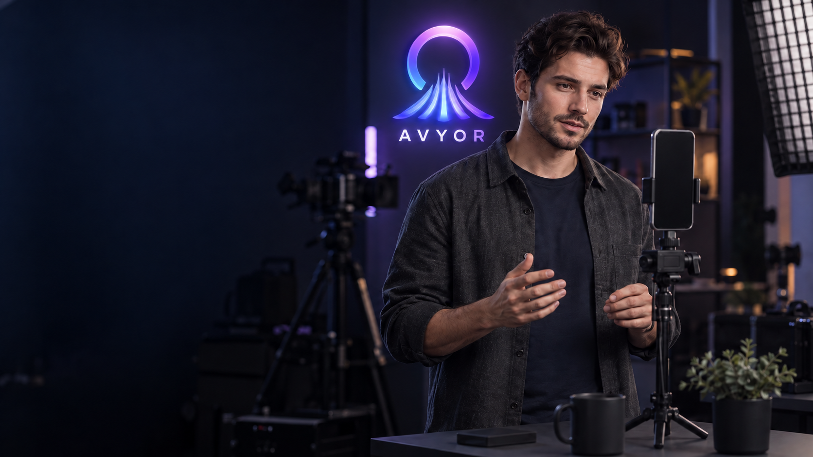

AVYOR — Le studio prend vie.
Un personnage de référence, cinq plans et leurs cinq compositions mobiles. Logo AVYOR dans le décor, écrans neutres dans les sources pour le compositing. Images générées par imagegen.
Avatar maître

Référence personnage, studio et éclairage · 1672 × 941Aperçus du montage · 14 secondes
Animatiques d’images fixes avec captures AVYOR incrustées. Les gestes animés par Runway restent à produire. Les écrans de l’app présentent des données de démonstration.
Desktop · 1920 × 1080 · 24 fpsMobile · 1080 × 1920 · 24 fps